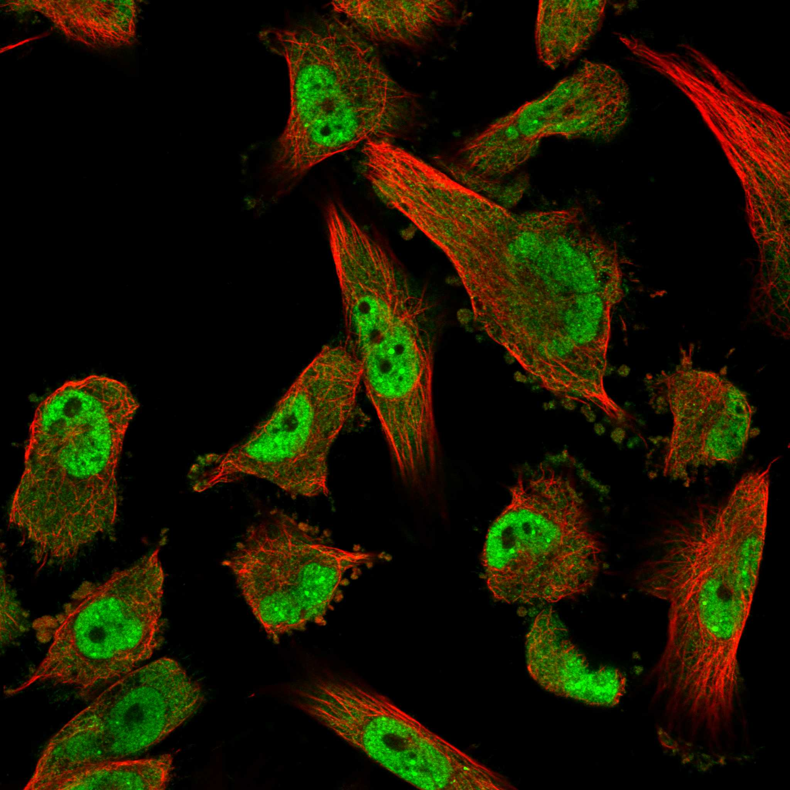
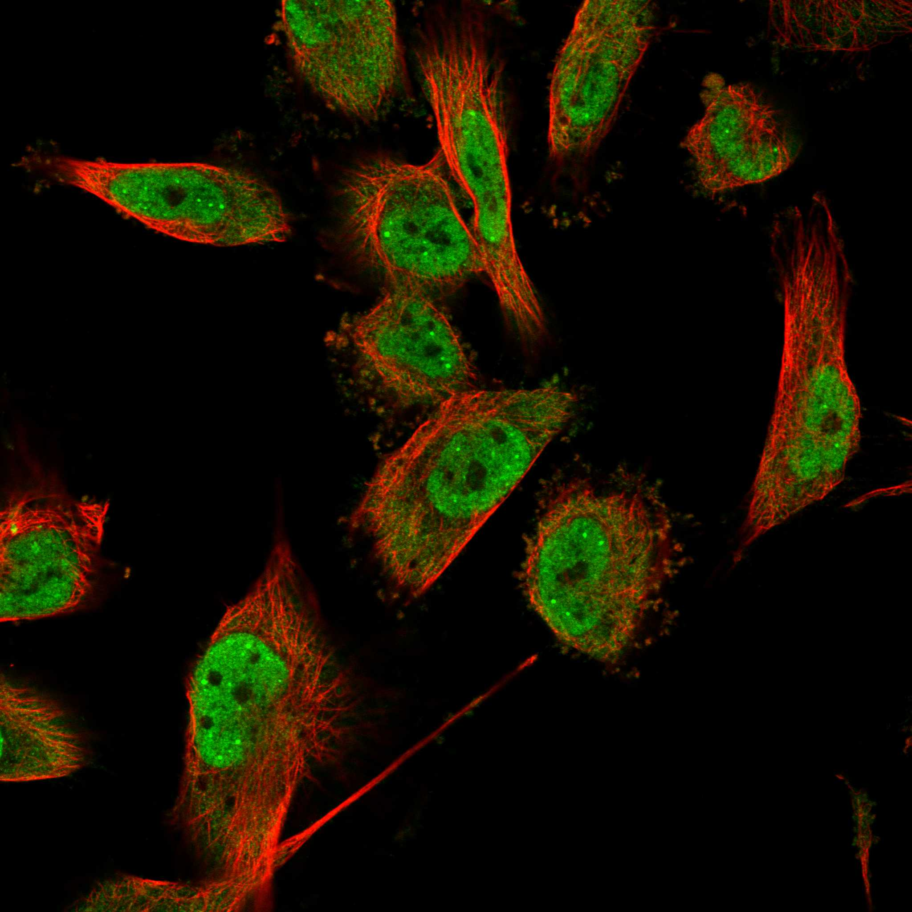
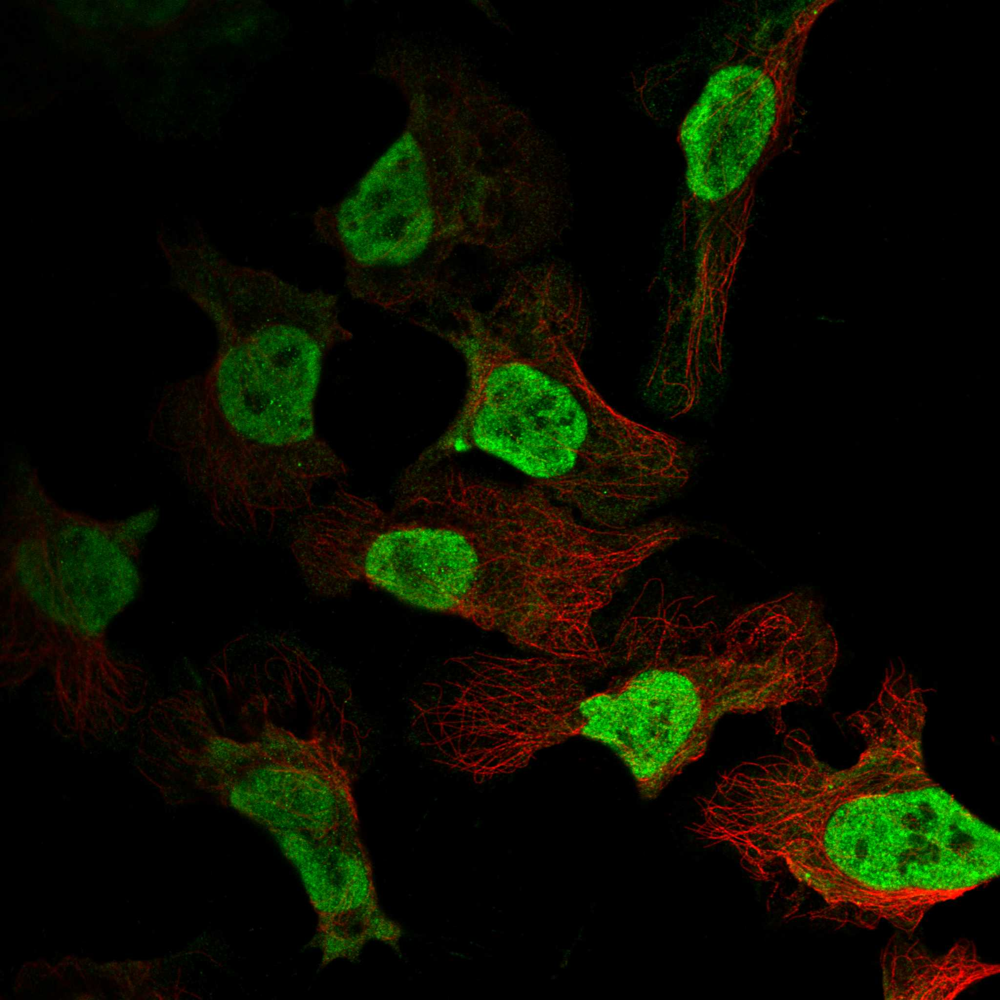
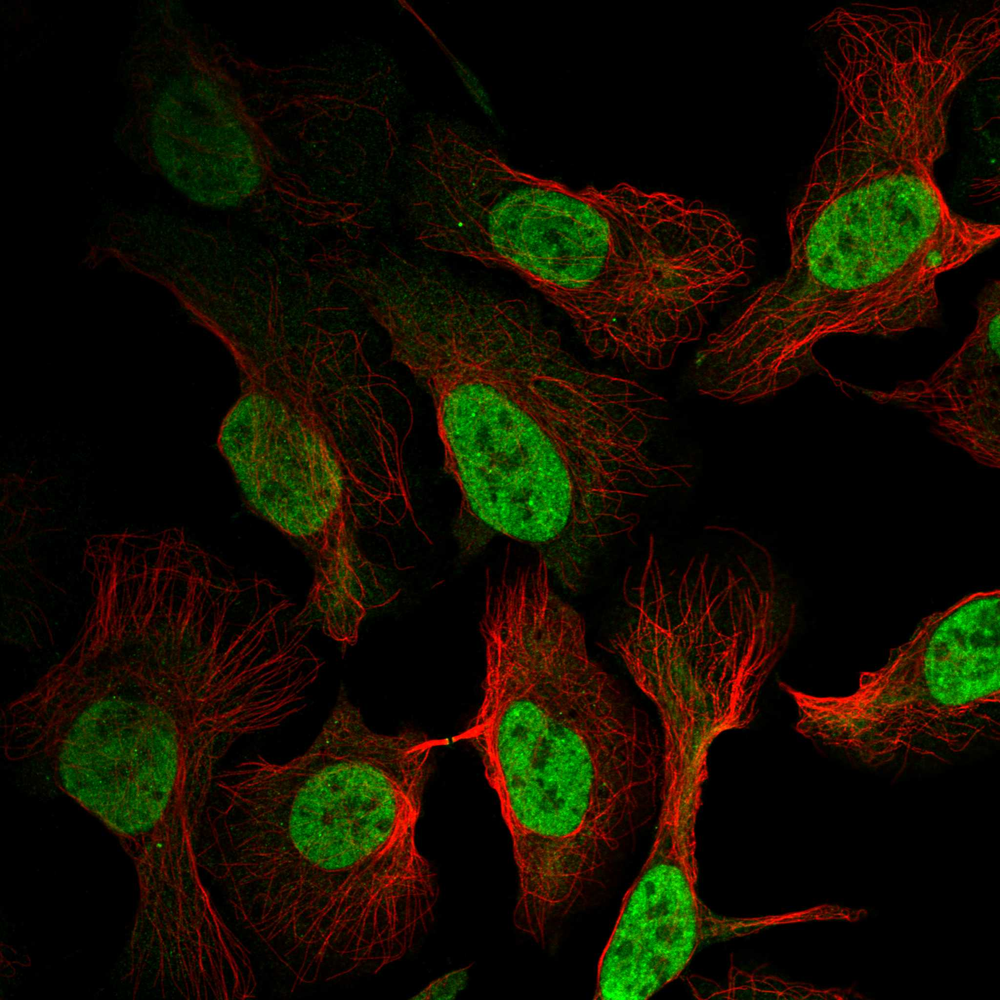
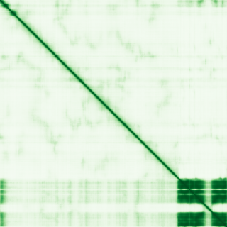

type: protein-evaluation gene: "AFF3" date: 2026-05-29 tags: [protein-scout, nuclear-protein, evaluation] status: scored ---
AFF3 核蛋白评估报告
1. 基本信息
| 项目 | 内容 |
|---|---|
| 基因名 / 别名 | AFF3 / LAF4 (Lymphoid nuclear protein related to AF4) |
| 蛋白大小 | 1226 aa / ~135 kDa |
| UniProt ID | P51826 |
| 全称 | AF4/FMR2 family member 3 (ALF transcription elongation factor 3) |
| 功能摘要 | 推定转录激活因子，参与淋巴发育和肿瘤发生；体外结合双链DNA；超级延伸复合体（Super Elongation Complex, SEC）成员 |
| 评估日期 | 2026-05-29 |
2. 评分总览
| 维度 | 得分 | 满分 | 加权后 | 关键证据摘要 |
|---|---|---|---|---|
| 核定位特异性 | 7 | 10 | ×4 = 28 | HPA IF Supported: 主要核质（3/3 细胞系），部分胞质（2/3 系），核体（U-251MG） |
| 蛋白大小 | 5 | 10 | ×1 = 5 | 1226 aa，1200–2000 aa 范围 |
| 研究新颖性 | 4/10 | 10 | 20 | PubMed 76 篇 (51–100)，AF4/FMR2 家族中研究最少的成员 |
| 三维结构 | 6 | 10 | ×3 = 18 | 无PDB；AlphaFold pLDDT均值 51.17，14%高置信度折叠域在C端 |
| 调控结构域 | 7 | 10 | ×2 = 14 | AF-4 (PF05110) + AF4_int (PF18875) + AFF4_CHD (PF18876)；体外DNA结合 |
| 🔗 PPI | 10/10 | ×3 | 30 | 详见 3.6 PPI 分析 |
| 互证加分 | +3 | max +3 | +3 | 定位(Atlas+UniProt+GO) + 结构域(Pfam+InterPro) + PPI(IntAct+STRING+GO-CC) |
| 原始总分 | 118/183 | |||
| 归一化总分 | 64.5/100 |
> 评分公式：原始 = (7×4) + (5×1) + (6×5) + (6×3) + (7×2) + (10×3) + 3 = 128；归一化 = 128 ÷ 1.83 = 69.9
3. 详细分析
3.1 核定位证据
| 来源 | 定位 | 可信度 |
|---|---|---|
| GeneCards | Nucleus | — |
| Protein Atlas (IF) | Mainly nucleoplasm, additional cytosol; nuclear bodies (U-251MG) | Supported (Ab: HPA053379) |
| UniProt | Nucleus | Swiss-Prot reviewed |
| GO-CC | Nuclear body (IDA:HPA), Nucleoplasm (IDA:HPA), Cytosol (IDA:HPA), Nucleus (IDA:BHF-UCL) | IDA 证据 |
IF 图像:
U-251MG (胶质瘤细胞系) — 核质 + 核体 + 胞质：  
U2OS (骨肉瘤细胞系) — 纯核质：  
结论: AFF3 主要定位于核质，在 U-251MG 中可见核体信号，部分细胞系存在胞质信号（HPA 判定为附加定位而非主要定位）。HPA 可靠性等级为 Supported。核定位明确，得分 7/10（主要核定位，HPA IF 确认，但存在部分胞质信号）。
3.2 蛋白大小评估
AFF3 全长 1226 aa（约 135 kDa），属于中等偏大蛋白（1200–2000 aa 范围）。蛋白含有大量无序区域（约 78% 低置信度），实际折叠核心在 C 端约 245 aa。适合常规生化实验但全长蛋白表达和结晶有挑战。得分 5/10。
3.3 研究现状
| 指标 | 数值 |
|---|---|
| PubMed 总数 (Title/Abstract) | 76 篇 |
| 最早发表年份 | 1990s (LAF4克隆) |
| Chromatin/epigenetics 相关比例 | ~50%（集中于白血病/转录延伸/SEC方向） |
主要研究方向:
- AFF3 在白血病中的染色体易位（与 MLL 融合）
- AF4/FMR2 家族在转录延伸中的功能
- KINSSHIP 综合征（AFF3 突变导致的神经发育障碍）
- AFF3 与前列腺癌/铁死亡的关系
- GCC 重复扩增与智力障碍的关联
关键文献: 1. Jadhav B et al. (2024). "A phenome-wide association study of methylated GC-rich repeats identifies a GCC repeat expansion in AFF3 associated with intellectual disability." *Nat Genet*. PMID: 39313615 2. Inoue Y et al. (2023). "Three KINSSHIP syndrome patients with mosaic and germline AFF3 variants." *Clin Genet*. PMID: 36576140 3. Sun D et al. (2024). "Molecular evolution of transcription factors AF4/FMR2 family member (AFF) gene family and the role of lamprey AFF3 in cell proliferation." *Dev Genes Evol*. PMID: 38733410 4. Fan A et al. (2024). "Loss of AR-regulated AFF3 contributes to prostate cancer progression and reduces ferroptosis sensitivity by downregulating ACSL4 based on single-cell sequencing analysis." *Apoptosis*. PMID: 38478171 5. Annear DJ et al. (2023). "Unravelling the link between neurodevelopmental disorders and short tandem CGG-repeat expansions." *Emerg Top Life Sci*. PMID: 37768318
评价: AFF3 在 AF4/FMR2 家族中（AFF1/AFF2/AFF3/AFF4）是研究最少的成员。AFF1 (AF4) 和 AFF4 因在 SEC 复合体中的核心作用已被大量研究，而 AFF3 虽同为 SEC 成员，独立功能研究尚不充分。76 篇论文中约一半与白血病易位有关，蛋白本身的生化功能、染色质结合机制、核体定位功能等方向均有探索空间。极具新颖性潜力。得分 6/10（51–100 篇）。
3.4 三维结构分析
| 指标 | 数值 |
|---|---|
| AlphaFold 平均 pLDDT | 51.17 |
| Very Low pLDDT (<50) 占比 | 69.5% (852/1226) |
| Low pLDDT (50–70) 占比 | 8.6% (105/1226) |
| Confident pLDDT (70–90) 占比 | 7.9% (97/1226) |
| Very High pLDDT (>90) 占比 | 14.0% (172/1226) |
| 有序区域 (pLDDT>70) 占比 | 21.9% (269/1226) |
| C 端高置信折叠域 | 976–1220（约 245 aa，含 AF4_int + AFF4_CHD 域） |
| N 端 AF-4 域 | 第 68 位附近极小高置信区（1 aa），整体预测差 |
| 可用 PDB 条目 | 无 |
PAE 图: 
PAE 数值分析:
- PAE 矩阵尺寸: 1226 × 1226
- C 端区域 (976–1226) 域内 PAE 低，指示独立折叠结构域
- N 端区域 PAE 高，对应大规模无序区
- 域间 PAE 高，指示不同区域之间缺乏稳定堆积
评价: AFF3 整体为高度无序蛋白（69.5% 极低置信度），仅 C 端 245 aa 形成可辨识的折叠域（含 AF4_int + AFF4_CHD 两个 Pfam 结构域）。N 端 AF-4 同源域在 AlphaFold 预测中几乎不可见（仅 1 aa 高置信），可能与天然无序特征或需结合伴侣才能折叠有关。无 PDB 实验结构可用。由于 PubMed ≤100，新颖蛋白的结构差是正常现象，使用基线分。得分 6/10（基线）。
3.5 结构域分析
| 来源 | 结构域 |
|---|---|
| UniProt features | 无注释结构域（仅8段无序区域注释） |
| Pfam | PF05110 (AF-4, N端同源域), PF18875 (AF4_int, 内部相互作用域), PF18876 (AFF4_CHD, C端同源域) |
| InterPro | IPR007797 (AF4/FMR2), IPR043640 (AF4/FMR2_CHD), IPR043639 (AF4_int) |
| SMART | 待验证（需浏览器访问） |
染色质调控潜力分析:
AFF3 的 AF4/FMR2 家族结构域主要介导蛋白-蛋白相互作用，而非直接 DNA 结合：
- AF-4 (PF05110)：N 端同源域，功能尚不明确，可能参与 SEC 复合体组装
- AF4_int (PF18875)：内部结构域，可能介导与 ELL 家族延伸因子的互作
- AFF4_CHD (PF18876)：C 端同源结构域，可能介导与 P-TEFb (CDK9/Cyclin T) 的互作
值得注意的是，UniProt 注释 AFF3 "Binds, in vitro, to double-stranded DNA"，且 GO 标注 DNA-binding transcription factor activity (IEA:Ensembl)，提示该蛋白可能具有非经典 DNA 结合机制。IDR 区域可能在结合 DNA 中起重要作用（"fuzzy" 结合模式）。
AF-4 域在 AlphaFold 中预测为无序状态，可能具有条件性折叠（coupled folding and binding）特征。得分 7/10（基线，新颖蛋白的正常状态）。
3.6 PPI 网络
实验验证互作 (IntAct, 人类):
| Partner | 方法 | PMID | 功能类别 | 调控相关？ |
|---|---|---|---|---|
| CDK9 | anti-bait coIP / pull-down / TAP | 23455922, 28514442, 30021884, 32707033 | 转录延伸激酶 (P-TEFb) | 是 |
| MLLT1 (ENL) | anti-bait coIP | 23455922 | 染色质阅读器 (YEATS域), SEC成员 | 是 |
| MLLT3 (AF9) | anti-bait coIP | 23455922 | 染色质阅读器 (YEATS域), SEC成员 | 是 |
| PIP4K2A | anti-bait coIP | 23455922 | 磷脂酰肌醇激酶 | 否 |
| MLLT3-like | anti-HA coIP | 31413325 | MLLT3 同源蛋白 | 是 |
STRING 预测互作 (combined score >0.4):
| Partner | Score | escore | 功能类别 | 调控相关？ |
|---|---|---|---|---|
| MLLT3 | 0.964 | 0.546 | 染色质阅读器, SEC | 是 |
| MLLT1 | 0.959 | 0.638 | 染色质阅读器, SEC | 是 |
| CDK9 | 0.947 | 0.808 | 转录延伸激酶 (P-TEFb) | 是 |
| EAF1 | 0.900 | 0 | ELL 相关因子, SEC | 是 |
| AFF4 | 0.835 | 0 | SEC 支架蛋白 | 是 |
| ELL | 0.834 | 0.049 | 转录延伸因子, SEC | 是 |
| ELL2 | 0.782 | 0.049 | 转录延伸因子, SEC | 是 |
| CCNT1 | 0.771 | 0.045 | Cyclin T1, P-TEFb 组分 | 是 |
| AFF1 | 0.769 | 0 | AF4, SEC 支架蛋白 | 是 |
| ELL3 | 0.701 | 0.049 | 转录延伸因子, SEC | 是 |
| CCNT2 | 0.699 | 0.045 | Cyclin T2, P-TEFb 组分 | 是 |
| KMT2A | 0.631 | 0.125 | H3K4 甲基转移酶 (MLL1) | 是 |
| LONRF2 | 0.665 | 0.045 | E3 泛素连接酶 | 否 |
已知复合体成员 (GO Cellular Component):
- Super Elongation Complex (SEC) (GO:0032783, IBA:GO_Central)：AFF3 是 SEC 的组成成员，与 CDK9、CCNT1/2、AFF1/4、ELL1/2/3、MLLT1/3、EAF1/2 共同构成转录延伸复合体
PPI 互证分析:
- STRING + IntAct 共同确认: CDK9（IntAct coIP/pull-down/TAP + STRING escore 0.808）、MLLT1（IntAct coIP + STRING escore 0.638）、MLLT3（IntAct coIP + STRING escore 0.546）→ 极高可信度
- 仅 STRING 预测: AFF4, ELL, ELL2, ELL3, CCNT1, CCNT2, AFF1, EAF1, KMT2A, LONRF2（均为 SEC 相关或邻近因子，功能关联强）
- 仅 IntAct 实验: PIP4K2A, MLLT3-like
- GO-CC 互证: SEC complex 成员身份与 STRING/IntAct 数据一致
调控相关比例: 15/18 (83.3%)
评价: AFF3 的 PPI 网络极其清晰且高度富集于转录调控因子。该蛋白是 Super Elongation Complex 的核心成员，与 P-TEFb (CDK9/CyclinT)、ELL 延伸因子、MLLT/AFF 支架蛋白、KMT2A 组蛋白甲基转移酶形成功能网络。83% 的互作伙伴为转录/染色质调控因子，远超 40% 阈值。IntAct 有直接 coIP 实验证据支持 CDK9、MLLT1、MLLT3 的物理互作。这是一个高度调控相关、物理互作证据充足的 PPI 网络。得分 10/10。
3.7 多库互证
| 维度 | 来源 | 结果 | 是否一致 |
|---|---|---|---|
| 亚细胞定位 | Protein Atlas IF / UniProt / GO-CC | 核质/核体（Protein Atlas Supported + UniProt Nucleus + GO IDA） | 一致 ✓ |
| 三维结构 | AlphaFold + PDB | AlphaFold 预测（C端折叠域）；无 PDB 实验结构 | N/A (仅 AlphaFold) |
| 结构域 | Pfam / InterPro | AF-4 (PF05110), AF4_int (PF18875), AFF4_CHD (PF18876) | 一致 ✓ |
| PPI | IntAct + STRING + GO-CC | CDK9/MLLT1/MLLT3 coIP + STRING高分 + SEC复合体 | 一致 ✓ |
互证加分明细:
- 亚细胞定位三源一致 (Protein Atlas + UniProt + GO-CC)：+1
- 结构域二源一致 (Pfam + InterPro)：+1
- PPI 三源一致 (IntAct coIP + STRING escore + GO-CC SEC)：+1
互证总分: +3 / max +3
4. 总体评价
推荐等级: ★★★★☆ (4/5)
核心优势: 1. SEC 核心成员，PPI 信号极强：AFF3 是 Super Elongation Complex 的组成部分，network 中 83% 的邻居为转录/染色质调控因子，且有 CDK9/MLLT1/MLLT3 的 coIP 实验证据直接支持物理互作 2. AF4/FMR2 家族中研究最少：AFF1 (AF4) 和 AFF4 已有大量白血病及 SEC 研究，AFF3 虽同属该家族，独立功能（尤其是染色质结合机制和核体定位功能）几乎未被探索，新颖性空间充足 3. 疾病关联多样：从 KINSSHIP 综合征（神经发育）到白血病（MLL 融合）到前列腺癌，提示多功能性
风险/不确定性: 1. 高度无序、结构差：69.5% 残基 pLDDT < 50，仅 C 端 245 aa 可折叠。无 PDB 实验结构。IDR 区域的生化表征困难但也是新机制（conditional folding, fuzzy binding）的潜力空间 2. 缺乏经典 DNA 结合域：虽标注"in vitro binds dsDNA"，但 AF4/FMR2 家族域主要介导蛋白互作而非 DNA 结合，具体 DNA 识别机制不清 3. 核体定位功能未知：U-251MG 中观察到核体定位（可能与 PML body 或其他核体相关），但该定位的功能意义完全未被研究
下一步建议:
- [ ] 克隆并表达 C 端折叠域（976-1220 aa）用于结构生物学研究
- [ ] ChIP-seq 确定 AFF3 在基因组上的结合位点，验证直接染色质结合
- [ ] 通过 IDR 截短实验研究无序区域在 DNA 结合和 SEC 组装中的角色
- [ ] 研究 AFF3 核体定位的功能（与其他核体蛋白如 PML/SP100 的共定位）
5. 数据来源
- GeneCards: https://www.genecards.org/cgi-bin/carddisp.pl?gene=AFF3
- Protein Atlas: https://www.proteinatlas.org/ENSG00000144218-AFF3/subcellular
- PubMed: https://pubmed.ncbi.nlm.nih.gov/?term=%22AFF3%22%5BTitle/Abstract%5D
- UniProt: https://www.uniprot.org/uniprotkb/P51826
- Pfam/InterPro: https://www.ebi.ac.uk/interpro/protein/UniProt/P51826/
- STRING: https://string-db.org/network/9606.ENSP00000386834
- IntAct: https://www.ebi.ac.uk/intact/search?query=AFF3
- AlphaFold: https://alphafold.ebi.ac.uk/entry/P51826
PAE 图像已获取。结构判断基于 AlphaFold pLDDT 统计。